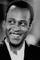
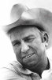
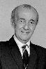

Country:United States, 93 minutes
Spoken languages:German, English, Yiddish
Genres:Western, Comedy
Director(s):Mel Brooks
Writer(s):Richard Pryor, Mel Brooks, Andrew Bergman, Norman Steinberg, Alan Uger
Video Codec:Unknown
Number: 539


Certification:R
Storyline:
A town—where everyone seems to be named Johnson—stands in the way of the railroad. In order to grab their land, robber baron Hedley Lemar sends his henchmen to make life in the town unbearable. After the sheriff is killed, the town demands a new sheriff from the Governor, so Hedley convinces him to send the town the first black sheriff in the west.
Cast:   


Medium: Original DVD,
Loaned: No
Aspect ratio: Unknown